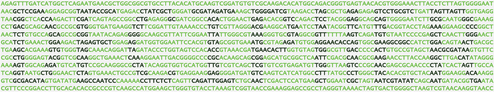

Summary Tree
This short example describes how to use Zipline to generate a summary tree. Given a set of gene trees, Zipline will construct a species tree summarizing the gene trees.How do I build a summary (species) tree with Zipline?
First it is necessary to install DECIPHER and load the library in R. Next, construct or load a set of trees representing phylogenies for different genes.# load the DECIPHER library in R
> library(DECIPHER)
>
> # load the gene trees from a file
> treefile <- "<<REPLACE WITH PATH TO NEWICK FILE>>"
> gene_trees <- ReadDendrogram(treefile)
> head(gene_trees)
[[1]]
'dendrogram' with 1 branches and 21 members total, at height 1.282693
[[2]]
'dendrogram' with 1 branches and 21 members total, at height 1.111368
[[3]]
'dendrogram' with 1 branches and 20 members total, at height 0.928914
[[4]]
'dendrogram' with 1 branches and 20 members total, at height 0.722309
[[5]]
'dendrogram' with 1 branches and 19 members total, at height 0.721084
[[6]]
'dendrogram' with 1 branches and 17 members total, at height 0.710298
> length(gene_trees)
[1] 1547
>
> # construct a summary tree
> species_tree <- Zipline(gene_trees,
+ distance="edges", # choose distance measure
+ bootstraps=100, # number of bootstrap replicates
+ processors=NULL) # use all CPUs
|========================================| 100%
Time difference of 211.74 secs
>
> # view the summary tree
> plot(species_tree)
>
> # optionally, output a Newick file
> WriteDendrogram(species_tree, file="")
(((('Brachypodium Distachyon':1.15974013,('Vigna Radiata':0,('Hordeum Vulgare Goldenpromise':1.020277101,('Gossypium Raimondii':0,'Hordeum Vulgare':1.027163752)'0.26':0.06270699534)'0.26':0.5226355698)'0.06':0.2650900662)'0':0.1088220048,('Arabidopsis Thaliana':0,('Aegilops Tauschii':0.886963178,('Solanum Tuberosum':0.09943447167,'Triticum Urartu':0.9005655283)'0.11':0.3063432162)'0.11':0.4159593989)'0.04':0.2134667621)'0':0.3589009797,(((('Prunus Dulcis':0.02409886598,'Setaria Italica':0.975901134)'0.08':0.1635212025,'Setaria Viridis':0.9108888397)'0.13':0.4923261857,'Marchantia Polymorpha':0)'0.01':0.2754227367,((('Phaseolus Vulgaris':0,'Eragrostis Tef':1.151230608)'0.08':0.2893039559,'Eragrostis Curvula':1.058647665)'0.06':0.2026906549,('Theobroma Cacao Matina':0,((('Brassica Napus':0,'Zea Mays':1.003627625)'0.35':0.223869828,'Sorghum Bicolor':0.83658518)'0.35':0.3335290899,('Chlamydomonas Reinhardtii':0,(('Malus Domestica Golden':0.1437167806,'Panicum Hallii Fil2':0.8562832194)'0.32':0.2945097102,'Panicum Hallii Hal2':0.8491722277)'0.38':0.5203053191)'0.17':0.5046315111)'0.01':0.2011246643)'0.02':0.1066289809)'0':0.2494489187)'0':0.1828469344)'0':0.09021009871,('Cucumis Sativus':0,((((('Oryza Meridionalis':0,'Trifolium Pratense':1.030095562)'0.34':0.4879089196,'Olea Europaea Sylvestris':0.9561726415)'0':0.4172130363,'Galdieria Sulphuraria':0)'0':0.3870871548,(('Prunus Persica':0,'Oryza Longistaminata':1.183869207)'0.1':0.2049658629,(('Capsicum Annuum':0.06941343062,'Oryza Rufipogon':0.9305865694)'0.09':0.4278390472,('Ostreococcus Lucimarinus':0,'Oryza Glumipatula':1.047447274)'0.06':0.1422292899)'0.02':0.3883494401)'0':0.2090227334)'0':0.2077721321,(('Arabidopsis Halleri':0,(('Chara Braunii':0,'Oryza Barthii':1.258400248)'0.04':0.4092308642,'Oryza Indica':1.2411002)'0.01':0.2964073207)'0':0.5425728061,('Oryza Punctata':0.8449515112,('Medicago Truncatula':0.09821259864,(('Prunus Avium':0.07260482098,'Oryza Brachyantha':0.927395179)'0.31':0.3978892782,'Leersia Perrieri':0.8873489322)'0.26':0.257668496)'0.08':0.3137395674)'0.05':0.258298256)'0':0.08897846848)'0':0.2258791662)'0':0.1845204834);